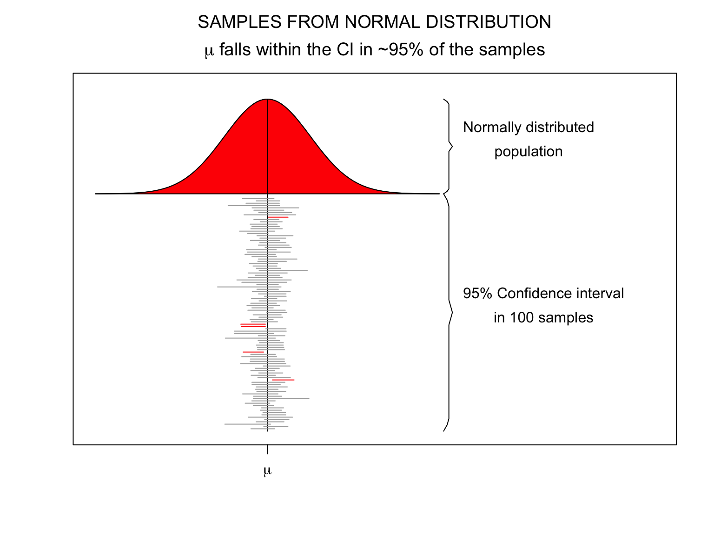
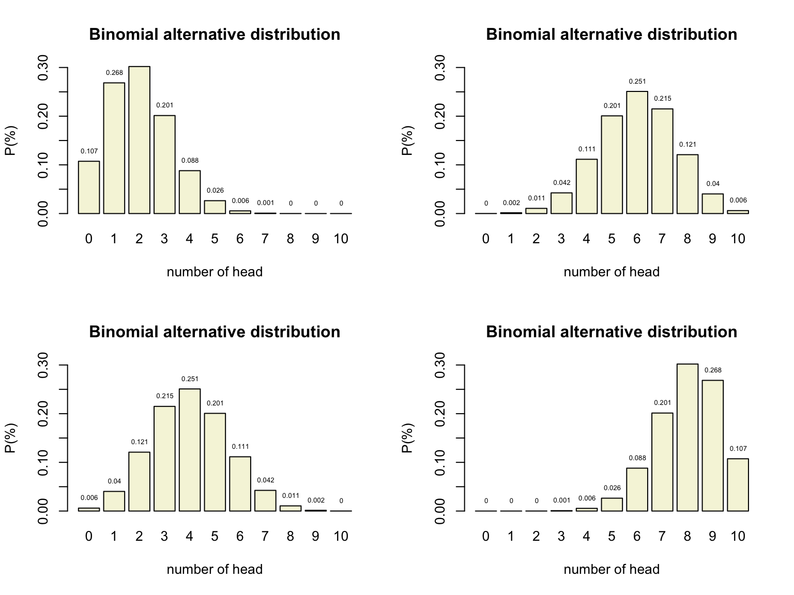
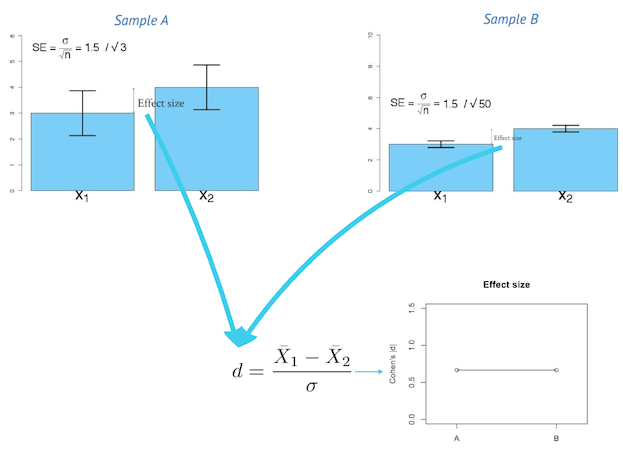
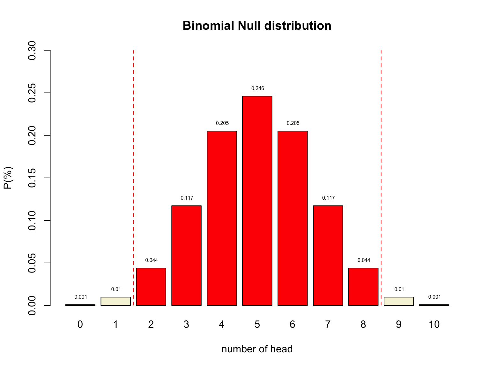
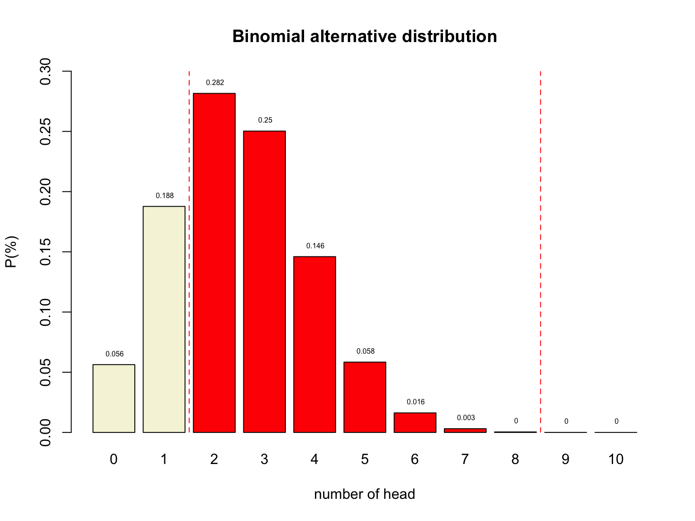
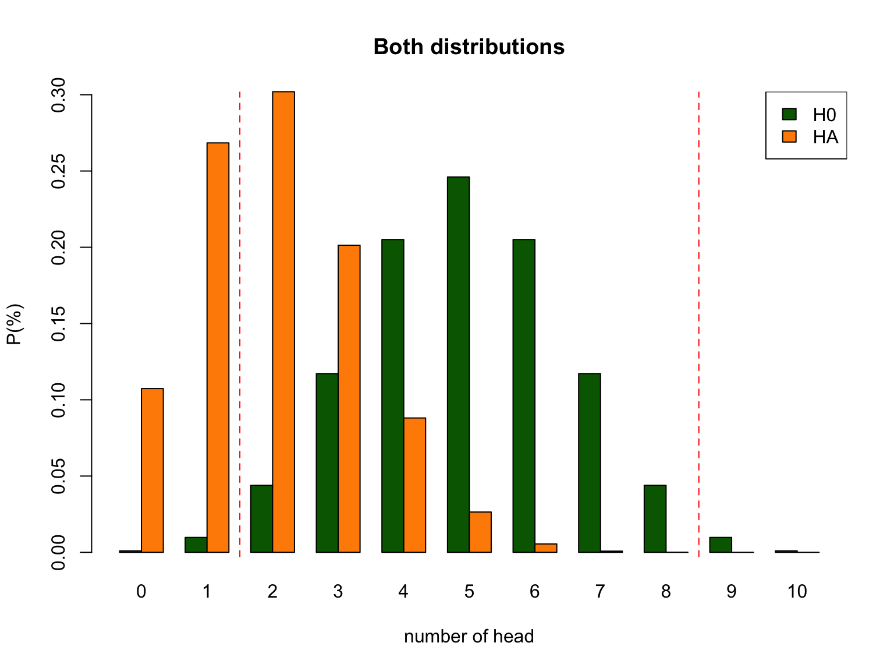

Null Hypothesis Testing
Klinkenberg
13 sep 2021
Null Hypothesis
Significance Testing
Neyman-Pearson Paradigm


\(H_0\) and \(H_A\)
|
\(H_0\)
|
\(H_A\)
|
Frequentist probability
- Objective Probability
- Relative frequency in the long run
Standard Error
95% confidence interval
\[SE = \frac{\text{Standard deviation}}{\text{Square root of sample size}} = \frac{s}{\sqrt{n}}\]
- Lowerbound = \(\bar{x} - 1.96 \times SE\)
- Upperbound = \(\bar{x} + 1.96 \times SE\)
Standard Error
- n₁ =
- n₂ =

Binomial \(H_0\) distribution
n = 10 # Sample size
k = 0:n # Discrete probability space
p = .5 # Probability of head
munt = 0:1
permutations = factorial(n) / ( factorial(k) * factorial(n-k) )
# permutations
p_k = p^k * (1-p)^(n-k) # Probability of single event
p_kp = p_k * permutations # Probability of event times
# the occurrence of that event
title = "Binomial Null distribution"
# col=c(rep("red",2),rep("beige",7),rep("red",2))
barplot( p_kp,
main=title,
names.arg=0:n,
xlab="number of head",
ylab="P(%)",
col='beige',
ylim=c(0,.3) )
# abline(v = c(2.5,10.9), lty=2, col='red')
text(.6:10.6*1.2,p_kp,round(p_kp,3),pos=3,cex=.5)
Binomial \(H_A\) distribution

Decision table
| \(H_0\) = True | \(H_0\) = False | |
|
Decide to reject \(H_0\) |
Type I error Alpha \(\alpha\) |
Correct True positive = Power |
|
Decide not to reject \(H_0\) |
Correct True negative |
Type II error Beta \(\beta\) |
Alpha \(\alpha\)
| \(H_0\) = True | \(H_0\) = False | |
|
Decide to reject \(H_0\) |
Type I error Alpha \(\alpha\) |
Correct True positive = Power |
|
Decide not to reject \(H_0\) |
Correct True negative |
Type II error Beta \(\beta\) |
- Incorrectly reject \(H_0\)
- Type I error
- False Positive
- Criteria often 5%
- Distribution depends on sample size

Power
| \(H_0\) = True | \(H_0\) = False | |
|
Decide to reject \(H_0\) |
Type I error Alpha \(\alpha\) |
Correct True positive = Power |
|
Decide not to reject \(H_0\) |
Correct True negative |
Type II error Beta \(\beta\) |
- Correctly reject \(H_0\)
- True positive
- Power equal to: 1 - Beta
- Beta is Type II error
- Criteria often 80%
- Depends on sample size

Post-Hoc Power
- Also known as: observed, retrospective, achieved, prospective and a priori power
- Specificly meaning:
The power of a test assuming a population effect size equal to the observed effect size in the current sample.
Source: O’Keefe (2007)
Effect size
In statistics, an effect size is a quantitative measure of the strength of a phenomenon. Examples of effect sizes are the correlation between two variables, the regression coefficient in a regression, the mean difference and standardised differences.
For each type of effect size, a larger absolute value always indicates a stronger effect. Effect sizes complement statistical hypothesis testing, and play an important role in power analyses, sample size planning, and in meta-analyses.
Source: WIKIPEDIA
Effect size

1 - alpha
| \(H_0\) = True | \(H_0\) = False | |
|
Decide to reject \(H_0\) |
Type I error Alpha \(\alpha\) |
Correct True positive = Power |
|
Decide not to reject \(H_0\) |
Correct True negative |
Type II error Beta \(\beta\) |
- Correctly accept \(H_0\)
- True negative

Beta
| \(H_0\) = True | \(H_0\) = False | |
|
Decide to reject \(H_0\) |
Type I error Alpha \(\alpha\) |
Correct True positive = Power |
|
Decide not to reject \(H_0\) |
Correct True negative |
Type II error Beta \(\beta\) |
- Incorrectly accept \(H_0\)
- Type II error
- False Negative
- Criteria often 20%
- Distribution depends on sample size


P-value
Conditional probability of the found test statistic or more extreme assuming the null hypothesis is true.
Reject \(H_0\) when:
- \(p\)-value <= \(alpha\)

Test statistics
Some common test statistics
- Number of heads
- Sum of dice
- Difference
- \(t\)-statistic
- \(F\)-statistic
- \(\chi^2\)-statistic
- etc…
Decision Table
N = 10 # Sample size
H0 = .5 # Probability of head under H0 50/50
HA = .2 # Aternative expected value
alpha = .05 # Selected type I error
# Color areas red for selected alpha
area <- dbinom(0:N, N, H0) < alpha/2
# barplot(dbinom(0:N,N, HA)) -> x.values
# x.values
# lb <- x.values[c(qbinom(alpha/2, N+1, H0), qbinom(alpha/2, N+1, H0)+1 )]
# ub <- x.values[c(qbinom(1-(alpha/2), N+1, H0), qbinom(1-(alpha/2), N+1, H0)+1 )]
#
# mlb <- mean(lb)
# mub <- mean(ub)
col = rep("beige", N+1)
col[area] = "red"
col2 = rep("red", N+1)
col2[area] = "beige"
# Delete # to not color the plots
# col = col2 = "beige"
layout(matrix(1:9,3,3, byrow=T))
plot.new()
text(0.5,0.5,"Binomial Distribution",cex=1.5)
# text(0.5,0.1,paste("N:",N),cex=1.5)
plot.new()
text(0.5,0.5,"H0 True",cex=2)
plot.new()
text(0.5,0.5,"H0 False",cex=2)
plot.new()
text(0.5,0.5,"Reject H0",cex=2)
barplot(dbinom(0:N,N, H0),
col = col,
# yaxt = 'n',
main = 'Alpha / Type I error',
names.arg = 0:N,
cex.names = 0.7)
# abline(v = mlb, col="red", lwd=3, lty=2)
# abline(v = mub, col="red", lwd=3, lty=2)
barplot(dbinom(0:N,N, HA),
col = col,
yaxt = 'n',
main = 'Power',
names.arg = 0:N,
cex.names = 0.7)
plot.new()
text(0.5,0.5,"Accept H0",cex=2)
barplot(dbinom(0:N,N, H0),
col = col2,
# yaxt = 'n',
main = '1 - alpha',
names.arg = 0:N,
cex.names = 0.7)
barplot(dbinom(0:N,N, HA),
col = col2,
yaxt = 'n',
main = 'Beta / Type II error',
names.arg = 0:N,
cex.names = 0.7)
Reasoning Scheme

R<-PSYCHOLOGIST
Source: Kristoffer Magnusson